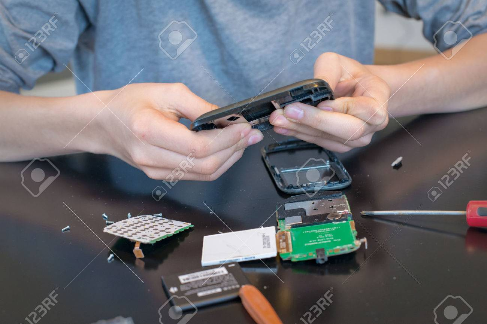

Nos services
L’écran de votre téléphone est cassé? Il a éclaté en mille morceaux? Vous ne savez plus quoi faire? Pas de panique! Chez SOS Phone ce n’est pas un obstacle. Nous procédons à la réparation de votre écran le jour même et vous retrouvez votre cellulaire tel qu’il était avant le choc. Les réparations d’écrans sont effectuées dans un délai moyen d’environ 60 minutes.
Equipements
L'usage du céllulaire s'est progressivement démocratisé vers la fin des années 1990. Le taux de pénétration du mobile dans le monde à cette époque est de 0,6 abonnements pour 100 habitants.
Notre affaire
Avec plus de 20 techniciens qualifiés répartis dans 3 succursales, nous saurons remettre vos téléphones et tablettes tactiles dans leur état original. Après des dizaines de milliers de réparations réussies sans tracas, vous pouvez vous fier sur notre savoir-faire!
Réparations offertes
Toutes les réparations de SOS Phone sont garanties 90 jours afin de vous assurer un service de qualité. La pièce changée est défectueuse? Nous vous la remplacerons sans frais. Et puisque tout est mis en place pour vous simplifier la vie, vous n’avez pas même besoin de votre facture originale pour que votre garantie soit honorée : vous n’avez qu’à revenir nous voir!.
La plupart des réparations étant reliées à des bris physiques, vous conserverez intact le contenu de votre appareil. D’ailleurs, soyez assuré qu’un soin tout particulier est porté à votre appareil en tout temps. Toutes les réparations sont effectuées chez SOS Phone par nos techniciens qualifiés, qui ont tous reçu une formation adéquate.
Nos offres de service
Nous savons que vous êtes occupés, c’est pourquoi toutes nos réparations sont effectuées rapidement et sur place. Les réparations prennent en moyenne 1 heure, mais les délais peuvent varier en fonction du modèle et de la réparation à effectuer. Vous pouvez patienter dans notre salle d’attente durant la réparation de votre appareil ou nous le laisser et venir le récupérer au moment de votre choix..
Mes Suggestions
Entrer votre nom:
Votre prénom, suivi de votre nom de famille
Votre Province:
Ontario, Alberta, Manitoba
Revenu annuel:
Votre âge: